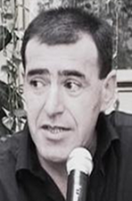

МЫ КУЛЬТИВИРУЕМ ПАРАЗИТОВ

Интервью Day.Az
с председателем Кавказского Центра
Миротворческих
Инициатив
Георгием Ваняном
После подписания соглашения о перемирии между Арменией и Азербайджаном, НПО наших стран стали активно сотрудничать друг с другом в рамках миротворческих проектов и встречаются на разных точках планеты, в том числе и в Армении вот уже 10 лет. Как, по-вашему, каковы реальные результаты всех этих встреч, народной дипломатии и диалога? Что-то их не видно.
С болью должен отметить, что никакого соглашения о перемирии между нашими странами не было. 12 мая 1994 года Армения и Азербайджан подписали Соглашение о прекращении огня, которое вот уже целых 12 лет так и не превращается в соглашение о перемирии.
Вместе с тем спорна для меня и формулировка об активном сотрудничестве НПО в рамках миротворческих проектов. Наши НПО скорее активно встречаются в разных точках планеты, в том числе и в Армении, но это отнюдь не означает, что они активно сотрудничают в сфере миротворчества.
Затрудняюсь говорить о результатах, так как в нашем случае за этими словами - «народная дипломатия» и «диалог» - ничего не стоит, это лишь только патетичное сотрясение воздуха. За последние 12 лет в наших странах, и на всем Южном Кавказе в целом, в лице государственных, политических и общественных деятелей сформировался паразитирующий на конфликте слой, считающий себя общественно-политической элитой.
Пока миротворческая деятельность не будет направлена на решение проблем, волнующих каждого гражданина, пока она не станет открытой для широкой общественности, пока каждый шаг и каждое слово в сфере миротворчества не найдет свою трансформацию в общественной жизни, мы будем культивировать лишь паразитов, заинтересованных в сохранении замороженного состояния конфликта, которое по сути означает его углубление.
К сожалению, любая попытка пересмотра «туристическо-ресторанного миротворчества» вызывает командное неприятие со стороны приватизировавших сферу общественного диалога НПО-шных монстров, которые считают, что имеют хорошее реноме на Западе... и этого достаточно.
После встречи президентов Ильхама Алиева и Роберта Кочаряна в Минске, Министр Иностранных Дел Азербайджана Эльмар Мамедъяров заявил, что между сторонами остался нерешенным всего один вопрос и в этом направлении переговоры будут продолжаться. Какова реальность разрешения конфликта в ближайшем будущем и что это за деталь, по-вашему, из-за которой стороны никак не могут договориться?
Я, как и все граждане Армении и Азербайджана, не имею никакого представления о том, о какой детали идет речь, и не могу судить об этом, опираясь на публикации в прессе или курсирующие в аналитико-политологических кругах глубокомысленные рассуждения, якобы раскрывающие суть этой детали.
Исходя из того, что содержание переговорного процесса не раскрывается для наших обществ, в том числе и для многочисленных политологов и аналитиков, которые мастерски зарабатывают на свой хлеб насущный различными суждениями, не берусь комментировать тот или иной аспект переговорного процесса.
Хочу лишь отметить, что любой документ, любое соглашение, подписанное в рамках текущего процесса, по сути будет лишь продлением Договора о прекращении огня и не положит конец конфликту и вражде. Это мое утверждение основывается на том, что наши общества на фоне переговорного процесса остаются отчужденными друг от друга и несут на себе весь негатив пропаганды образа врага, которая ведется с обеих сторон. Таким образом, мы обречены на единственно возможный сценарий: «Любовь – по приказу, ненависть – по приказу» (формулировка моего любимого писателя Ваге Аветяна).
После каждой поездки азербайджанских журналистов и представителей НПО в Армению, в Вашей стране находятся СМИ, которые искажают слова этих людей, после чего, вернувшись на Родину, они сталкиваются с рядом проблем. Каковы механизмы борьбы с этим негативным явлением, и какие меры предпринимаете Вы, в случае, если из-за дезинформации пострадает участник Ваших проектов?
Еще раз оспорю постановку вопроса. Отнюдь не каждая поездка азербайджанских журналистов и представителей НПО в Армению, в том числе их встречи с армянскими коллегами на разных точках планеты, вообще освещаются в каких-либо СМИ. Что касается довольно частых визитов представителей Азербайджана в Армению, то подавляющее большинство из них проводится в «закрытом режиме», то есть о самом факте визитов и содержании встреч знает лишь узкий круг людей, НПО-шников.
Все проекты нашей организации, Кавказского Центра Миротворческих Инициатив, проводятся с максимальной открытостью для общественности и прессы, мы делаем все возможное для того, чтобы максимально расширить аудиторию проектов, дать максимальную информацию о том, с какой целью приехали азербайджанские участники, чем они занимались и каковы результаты нашей совместной деятельности.
Я глубоко убежден, что, чем более открыто и публично пребывание наших азербайджанских коллег в Армении, тем больше они защищены по возвращению в Азербайджан. Говорю об этом с уверенностью, ибо считаю, что поводом для давления на наших коллег являются не публикации в армянской прессе, а слухи и сплетни вокруг их поездок.
Наш текущий проект – Мастер-класс для молодых журналистов Армении, на который в качестве ведущих были приглашены журналист Алекпер Алиев, культуролог Эльмир Мирзоев и политический обозреватель «The New Anatolian» Нурсун Эрель, широко освещался и будет освещаться в СМИ Армении, Азербайджана и Турции.
В течение этого проекта мы столкнулись с фактом искажения выступлений, интервью участников проекта и дезинформации со стороны армянского агентства PanARMENIAN.Net и российского ИА REGNUM. Мы предприняли соответствующие шаги и скоро Кавказский Центр Миротворческих Инициатив выступит с заявлением по этому поводу.
Хочу только добавить, что причиной давления на азербайджанцев, приезжающих в Армению, является многолетняя заболоченность и закрытость сферы «миротворчества» и отсутствие реального партнерства между деятелями с обеих сторон. Только через открытость и публичность можно преодолеть неприятие обществом самого факта нашего сотрудничества, только через реальное партнерство мы сможем получить общественную поддержку нашей деятельности, и только в случае общественной поддержки отдельные попытки дезинформации и давления не будут иметь серьезных последствий.
Я уверен, что и в обществе Армении, и в обществе Азербайджана реальное миротворчество может быть поддержано. И первое, что нам мешает – это накопившиеся проблемы неправительственной сферы, долгие годы имитации диалога.
Алекпер Алиев
09-12-06
Баку-Ереван-Баку
После подписания соглашения о перемирии между Арменией и Азербайджаном, НПО наших стран стали активно сотрудничать друг с другом в рамках миротворческих проектов и встречаются на разных точках планеты, в том числе и в Армении вот уже 10 лет. Как, по-вашему, каковы реальные результаты всех этих встреч, народной дипломатии и диалога? Что-то их не видно.
С болью должен отметить, что никакого соглашения о перемирии между нашими странами не было. 12 мая 1994 года Армения и Азербайджан подписали Соглашение о прекращении огня, которое вот уже целых 12 лет так и не превращается в соглашение о перемирии.
Вместе с тем спорна для меня и формулировка об активном сотрудничестве НПО в рамках миротворческих проектов. Наши НПО скорее активно встречаются в разных точках планеты, в том числе и в Армении, но это отнюдь не означает, что они активно сотрудничают в сфере миротворчества.
Затрудняюсь говорить о результатах, так как в нашем случае за этими словами - «народная дипломатия» и «диалог» - ничего не стоит, это лишь только патетичное сотрясение воздуха. За последние 12 лет в наших странах, и на всем Южном Кавказе в целом, в лице государственных, политических и общественных деятелей сформировался паразитирующий на конфликте слой, считающий себя общественно-политической элитой.
Пока миротворческая деятельность не будет направлена на решение проблем, волнующих каждого гражданина, пока она не станет открытой для широкой общественности, пока каждый шаг и каждое слово в сфере миротворчества не найдет свою трансформацию в общественной жизни, мы будем культивировать лишь паразитов, заинтересованных в сохранении замороженного состояния конфликта, которое по сути означает его углубление.
К сожалению, любая попытка пересмотра «туристическо-ресторанного миротворчества» вызывает командное неприятие со стороны приватизировавших сферу общественного диалога НПО-шных монстров, которые считают, что имеют хорошее реноме на Западе... и этого достаточно.
После встречи президентов Ильхама Алиева и Роберта Кочаряна в Минске, Министр Иностранных Дел Азербайджана Эльмар Мамедъяров заявил, что между сторонами остался нерешенным всего один вопрос и в этом направлении переговоры будут продолжаться. Какова реальность разрешения конфликта в ближайшем будущем и что это за деталь, по-вашему, из-за которой стороны никак не могут договориться?
Я, как и все граждане Армении и Азербайджана, не имею никакого представления о том, о какой детали идет речь, и не могу судить об этом, опираясь на публикации в прессе или курсирующие в аналитико-политологических кругах глубокомысленные рассуждения, якобы раскрывающие суть этой детали.
Исходя из того, что содержание переговорного процесса не раскрывается для наших обществ, в том числе и для многочисленных политологов и аналитиков, которые мастерски зарабатывают на свой хлеб насущный различными суждениями, не берусь комментировать тот или иной аспект переговорного процесса.
Хочу лишь отметить, что любой документ, любое соглашение, подписанное в рамках текущего процесса, по сути будет лишь продлением Договора о прекращении огня и не положит конец конфликту и вражде. Это мое утверждение основывается на том, что наши общества на фоне переговорного процесса остаются отчужденными друг от друга и несут на себе весь негатив пропаганды образа врага, которая ведется с обеих сторон. Таким образом, мы обречены на единственно возможный сценарий: «Любовь – по приказу, ненависть – по приказу» (формулировка моего любимого писателя Ваге Аветяна).
После каждой поездки азербайджанских журналистов и представителей НПО в Армению, в Вашей стране находятся СМИ, которые искажают слова этих людей, после чего, вернувшись на Родину, они сталкиваются с рядом проблем. Каковы механизмы борьбы с этим негативным явлением, и какие меры предпринимаете Вы, в случае, если из-за дезинформации пострадает участник Ваших проектов?
Еще раз оспорю постановку вопроса. Отнюдь не каждая поездка азербайджанских журналистов и представителей НПО в Армению, в том числе их встречи с армянскими коллегами на разных точках планеты, вообще освещаются в каких-либо СМИ. Что касается довольно частых визитов представителей Азербайджана в Армению, то подавляющее большинство из них проводится в «закрытом режиме», то есть о самом факте визитов и содержании встреч знает лишь узкий круг людей, НПО-шников.
Все проекты нашей организации, Кавказского Центра Миротворческих Инициатив, проводятся с максимальной открытостью для общественности и прессы, мы делаем все возможное для того, чтобы максимально расширить аудиторию проектов, дать максимальную информацию о том, с какой целью приехали азербайджанские участники, чем они занимались и каковы результаты нашей совместной деятельности.
Я глубоко убежден, что, чем более открыто и публично пребывание наших азербайджанских коллег в Армении, тем больше они защищены по возвращению в Азербайджан. Говорю об этом с уверенностью, ибо считаю, что поводом для давления на наших коллег являются не публикации в армянской прессе, а слухи и сплетни вокруг их поездок.
Наш текущий проект – Мастер-класс для молодых журналистов Армении, на который в качестве ведущих были приглашены журналист Алекпер Алиев, культуролог Эльмир Мирзоев и политический обозреватель «The New Anatolian» Нурсун Эрель, широко освещался и будет освещаться в СМИ Армении, Азербайджана и Турции.
В течение этого проекта мы столкнулись с фактом искажения выступлений, интервью участников проекта и дезинформации со стороны армянского агентства PanARMENIAN.Net и российского ИА REGNUM. Мы предприняли соответствующие шаги и скоро Кавказский Центр Миротворческих Инициатив выступит с заявлением по этому поводу.
Хочу только добавить, что причиной давления на азербайджанцев, приезжающих в Армению, является многолетняя заболоченность и закрытость сферы «миротворчества» и отсутствие реального партнерства между деятелями с обеих сторон. Только через открытость и публичность можно преодолеть неприятие обществом самого факта нашего сотрудничества, только через реальное партнерство мы сможем получить общественную поддержку нашей деятельности, и только в случае общественной поддержки отдельные попытки дезинформации и давления не будут иметь серьезных последствий.
Я уверен, что и в обществе Армении, и в обществе Азербайджана реальное миротворчество может быть поддержано. И первое, что нам мешает – это накопившиеся проблемы неправительственной сферы, долгие годы имитации диалога.
Алекпер Алиев
09-12-06
Баку-Ереван-Баку